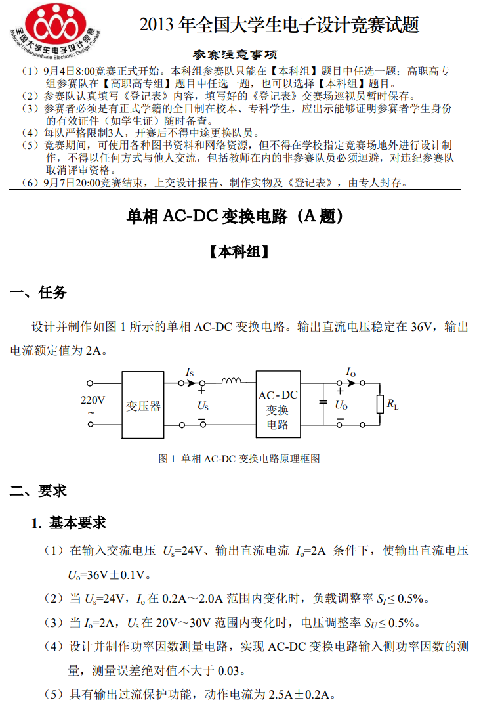
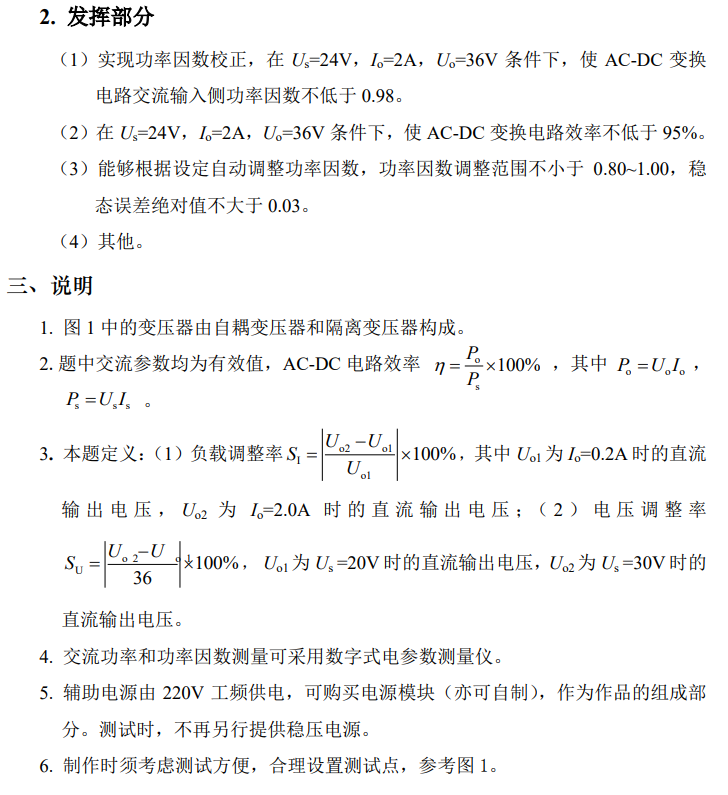
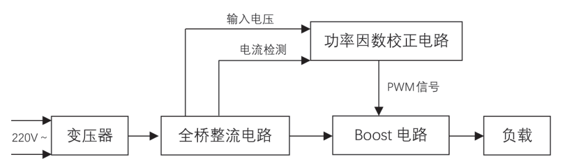
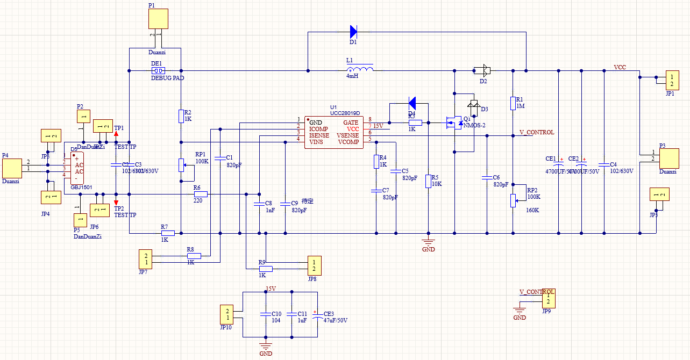
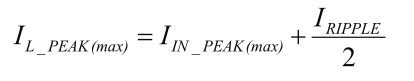
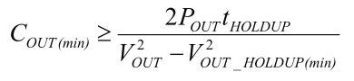
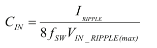
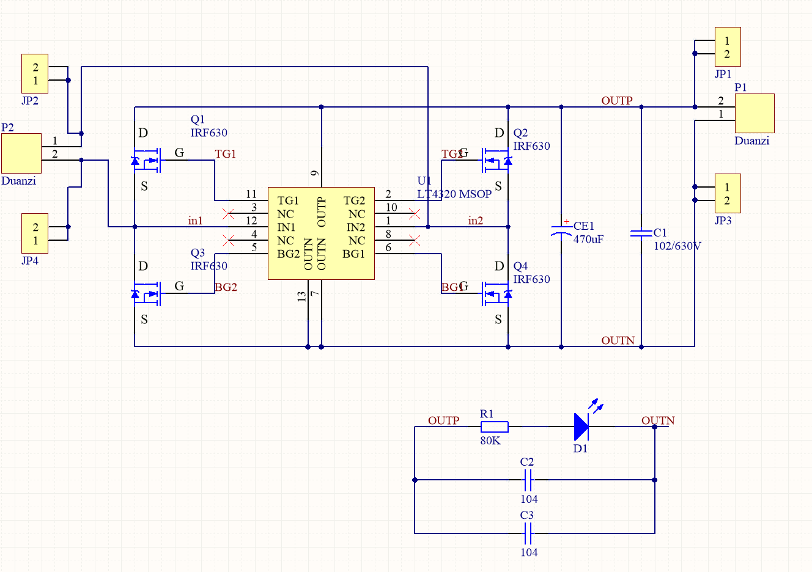

基于UCC28019的高功率因素电源
High power factor voltage based on UCC28019
July 25, 2022
设计要求
根据2013年电赛赛题 ：


系统方案
方案概述
采用单相全桥同步整流、boost PFC功率因素矫正电路级联。使用TL431同步整流芯片构成的全桥电路代替整流桥，降低输入电压电流波形畸变程度并提高效率；后级使用UCC28019芯片构成的boost PFC芯片。此方案电路拓扑简单，模拟 IC 控制实现高功率因数校正，但难以实现功率因素的调整。本设计还采用兼容设计，可以整流桥和TL431同步整流电路兼容。
系统框架
该系统采用 TI 公司专用 APFC 整流控制芯片 UCC28019 作为控制核心，构成电压外环和电流内环的双环控制，构建了有源功率因数校正（APFC）的高功率因数整流电源。其中，电流内环作用是使网侧交流输入电流跟踪电网电压的波形与相位；电压外环为输出直流电压控制环，外环电压调节器的输出控制内环电流调节器的增益，使输出直流电压稳定。实际测试表明，采用UCC28019 作为本系统的 APFC 芯片完全达到或超过题目要求的所有指标。

电路设计
主电路设计
Boost 升压电路中的储能电感 、功率开关管 、续流二极管 、输出滤波电容 是此电路的主要元器件。当功UCC28019 芯片的 8 号脚有PWM 波形输出时，功率开关管导通，整流电路输出的电压几乎全部加在储能电感 L 两端，此时电感极性为左端正右端负，续流二极管反偏处于截止状态，电流从电源正端经储能电感和功率开关管流回电源负端，储能电感电流按线性规律上升，电感将电能转化为磁能储存起来。经过一段时间后，控制电路无PWM 波形输出，开关管截止，两端自感电势的极性变为右端正左端负，使 二极管导通，电感释放储能，储能电感电流按线性规律下降；这时 Boost 电 路的输入电压和电感上的电压 UL 叠加起来，经续流二极管向负载供电和滤波电容充电。重复上述两种过程。
可参考boost电路CCM模式下工作特点。 该电路的优点：
（1）输出电压总是高于输入电压，当功率开关管被击穿短路时，不会出现输出电压过高而损坏负载的情况。
（2）升压变换器的输入电流（即 L 中的电流iL）是连续的，不是脉冲电流，因此对电源只有较小的干扰，缓解输入滤波的任务。
该电路的缺点：
输出侧的电流（流经 D2 的电流）是不连续的，即脉冲电流，加重了输出滤波的任务。

详细计算公式请参考芯片手册。
开关管的选择
电感电流最大值为7.2A，电压最大值为35V，选取开关管为SUP85N10,Vds=100V,Rds(on)=0.01,Id=85A，
续流二极管的选择
电感电流最大平均值为4.6A，选取MBR30100，Id=2*15A,V=100V,Vf=0.68V,Ifsm=350A,TJmax=150℃
整流桥选择
兼容设计 GBJ3510，1000V,Iavg=4.2A
电感
铁硅铝功率电感4mH，最小电感0.1mH

取样电阻
0.07Ω 2W 限流点16.429A
输出电容
输出保持时间20ms（30V）最低7700uf 选择9400uf，输出电压纹波0.72V

输入电容
输入电流纹波20% 电压纹波3%
2uf电容

辅助电源的设计
使用模块电路，为芯片提供15V电压
UCC28019模块
UCC28019，此芯片振荡频率由内部固定为 65KHZ，这样可以有效的避免外界的干扰，提高振荡频率的稳定性。该芯片输出 PWM 波最大占空比为 97%，用在 BOOST 电路中能很好地进行有源功率因数校正，被校正电路功率因数趋近于 1，完全满足系统基本设计的要求。
UCC28019主要特性有： （1）8 个引脚可以减少外围电路器件； （2）宽范围交流输入电压有效值（85~265 VAC）； （3）固定开关频率工作（65 kHz）； （4）最大占空比限制 98%； （5）输入电压欠压保护； （6）每周期电流峰值限制； （7）开环检测功能； （8）用户可控低功耗待机模式。
引脚介绍
脚 1（GND）：地，设备接地参考。
脚 2（ICOMP）：电流环补偿，跨导电流放大器输出端。 该端对地连接一个电容可以提供电流环路的补偿， 经过该电流环可以得到检测电流的平均值。 如果该引脚的电平低于 0.6 V，那么芯片将停止工作。
脚 3（ISENSE）：电感电流检测，该引脚接收电感电流检测信号并提供峰值电流限制功能。 该引脚上接收的是检测电阻上的负电压，该电压反映了电感电流的变化，引脚对地接一个 220 Ω 的电阻防止浪涌电流对芯片的损坏，对地接一个 1000 pF 的电容来提高该引脚的抗噪声能力。
脚 4（VINS）：输入交流电压检测，该引脚是从整流后电压分压电阻网络接入的分压电压值。 当交 流输入电压低于正常规定允许范围，检测该引脚的值可以实现输入电压的欠压保护。 在启动过程中，直到该引脚的电压达到 1.5 V， 芯片才开始初始化软启动过程。 当该引脚电压低于 0.8 V 时，芯片停止工作。 只有当该引脚的电压和 VSENSE 的引脚电压同时达到使能电压，芯片才开始复位工作，进行下一个软启动过程。
脚 5（VCOMP）：电压误差放大器输出端。 即跨导误差放大器的输出端。 该引脚接对地接一个电阻 电容补偿网络进行补偿 。 VCOMP 在 VINS 和VSENSE 和 VCC 同时达到它们的使能电压时，才开始从零开始一直上升到其正常输出值的 99%。 当增强动态响应装置（EDR）工作时，跨导误差放大器的跨导将增大，减少 VCOMP 的充电时间，加快动态响应。 软启动速度是由该引脚的电容大小决定。EDR 在软启动过程中是被禁止的。
脚 6（VSENSE）：输出电压检测端，该引脚接到输出电压分压电阻网络得到分压电压，保证该电压围绕 5 V 的参考电压附近进行调整。 该引脚对地接一个电容以抑制高频噪声。 当 VSENSE 电压低于0.8 V 门限时， 此为睡眠模式开启，VCOMP 的电压开始减小。当电路开环故障时，芯片内部 100 nA 电流源将 VSENSE 引脚拉地。 当该引脚超过其额定电压的 105%时，输出电压过压保护启动，将开关管驱动信号关闭。 当输入电压变化或者负载变化使得输出电压减小于额定电压的 95%，那么 EDR 启动，将输出电压维持于正常值。
脚 8（GATE）：栅极驱动，推挽式栅极驱动，可以驱动外部一个或者多个功率 MOSFET， 提供1.5~ 2.0 A 的驱动电流，输出电压被钳位于 12.5 V
芯片外围电路参数可根据TI提供的计算书计算，在此不做过多赘述。
TL431整流模块
LT4320是理想的二极管桥式控制器，可驱动四个n沟道mosfet，支持从DC到600Hz的典型电压整流。通过最大化可用电压和降低功耗)，理想的二极管桥简化了电源设计并降低了电源成本，特别是在低压应用中。理想的二极管桥还可以消除热设计问题，并大大减少PC板面积。其内部电荷泵支持全nmos设计，从而消除了更大、更昂贵的PMOS开关。如果电源发生故障或短路，快速关断可以最大限度地减少反向电流瞬变。
mos管仍使用SUP85N10

测试结果
参考视频 【电赛准备】UCC28019功率因素校正APFC_BOOST_哔哩哔哩_bilibili
视频中效率93.5% 功率因素0.972 电压精度0.06% 负载电压调整率0.1% 电压调整率0.05%
非最终版本，由于Icomp引脚参数设置错误，效率和功率因素更好
- Posted on:
- July 25, 2022
- Length:
- 1 minute read, 196 words
- Tags:
- hustle-site
- See Also:
- 单相交流电子负载
- 磁耦合谐振式无线电能传输
- 智能小车电源模块